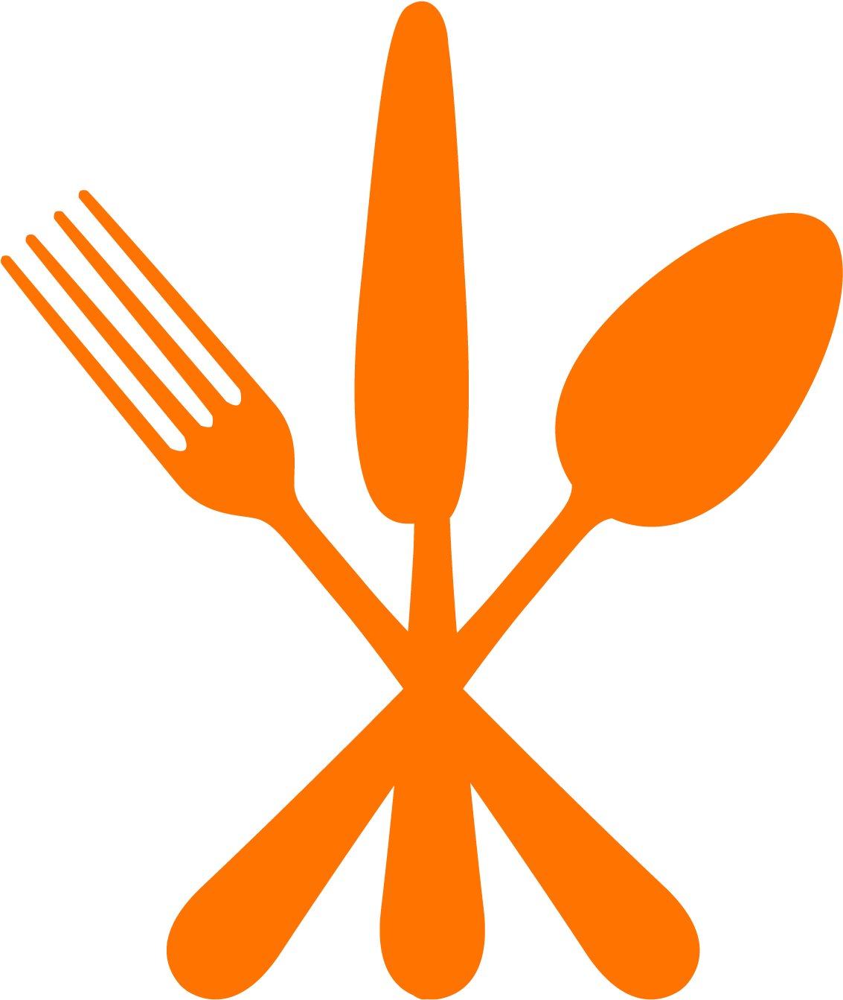

Spaghetti Carbonara
Life tastes better with pasta
Prep time
15min
Cook time
15min- 
prepared in
30min
Difficulty
Easy
About
Spaghetti Carbonara is an Italian Pasta dish from Rome originally
made with egg, hard cheese, pork and black pepper.
This delicious meal is served in restaurants and is very much a fine-dining
dish and can be quite pricey, but before you are too disappointed
i have some good news...as fancy as this dish is it is also quite easy to make
in the comfort of your home and even better you could make it for half the price if you
just follow this recipe you will have a quick fine-dining dish in front of you
ready for those special dinner dates with your partenr or yourself.
Ingridients
- 225g spaghetti
- 125g bacon
- 170g sliced mushrooms
- 3 garlic cloves finely chopped
- 125g cheese of your own liking
- 1 red onion
- 2 Tbsp Olive oil
Spice
- Salt
- pepper
- garlic powder
Dairy
- 1 whole egg
- 1 egg yolk
- 1/4 stick butter
Garnish
- 1/2 bunch paresely
- hand full spinach
- half cut cherry tomatoes for decoration
Method
Preping
- Pre-heat stove to medium heat then Fill a large pot with water and season well with
a few big pinches of salt and bring to a boil.
- slice your mushrooms and transfer it to a bowl, peel and chop up the garlic cloves as
well as the onion and put into a seperate bowl.
- Chop bacon into bite size pieces and set aside.
- whisk together one whole egg and egg yolk, add in 1 1/2 tsp of pepper and 1/2tsp garlic
powder and add cheese until well combined
Cooking
- Put the spaghetti into the boiling water and cook until desirable softness (save some of the pasta water)
- Put the oil into the pan and cook the bacon as well as the mushrooms
- Put mushrooms and bacon in a bowl and set aside
- In the same pan throw in minched garlic and onion as well as thte butter
- cook until onion has caramalised.
- In the pan mix in your bacon and mushroom with the onion and garlic.
- You will now mix in your spaghetti and about a 1/3 cup of the pasta water.
- Toussel the egg and cheese mixture into the pan until everything is evenly coated.
- Garnish with fresh chopped parsley, halved cherry tomatoes and spinach
Nutrition
| Calories |
Calories from fat |
total fat |
cholestrol |
Sodium |
| 2036 |
592 |
66g |
372mg |
1930mg |
| Potassium |
Carbohydrates |
protein |
Sugar |
Dietry fiber |
| 772mg |
266g |
88g |
5g |
15g |

Social Media
Be sure to check us out on our social media You wont regret.
Have a pasta day